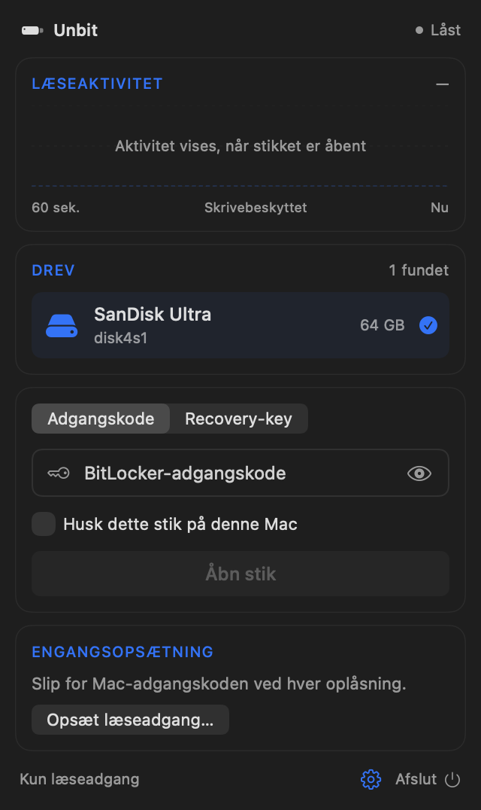
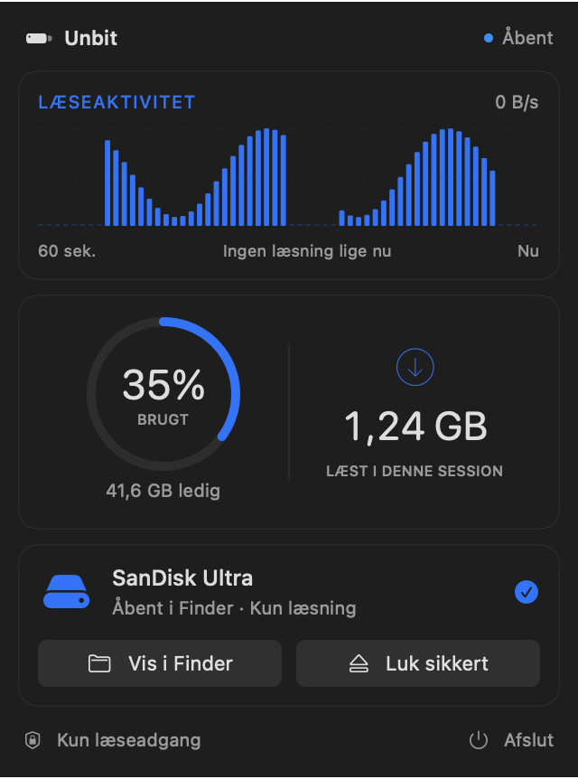

Drag to Applications
Open the DMG and drag Unbit into your Applications folder. It lives in the menu bar, not the Dock.
Open BitLocker-encrypted USB drives on your Mac. Read-only, with no extra drivers. Just enter the password or recovery key.


Three steps from a locked drive to your files in Finder. The one-time setup takes about a minute.
Open the DMG and drag Unbit into your Applications folder. It lives in the menu bar, not the Dock.
A short guide shows you where to switch it on in System Settings. You only do this once.
Unbit spots the drive automatically. Enter the password or recovery key, and the drive opens in Finder.
Unbit attaches the unlocked drive to macOS as read-only. Nothing is ever written back, so your files, and the drive's BitLocker setup, stay exactly as Windows left them. Copy what you need, then eject.
A small, focused menu bar app for one job: getting to the files on a BitLocker drive.
No kernel extensions and no third-party file system layers. Unbit uses the disk image support already built into macOS.
Only the parts macOS actually reads are decrypted, as they're read. No waiting for a full copy of the drive.
Plug in a drive and it appears in Unbit right away. Unplug it and Unbit tidies up on its own.
One click closes the drive and ejects it, so you know when it's safe to unplug. Quitting closes an open drive first.
Tick "Remember this drive" and the code is stored encrypted in your macOS keychain, never anywhere else.
Signed with Developer ID and notarized by Apple. New versions arrive through signed automatic updates.
Available in 11 languages – English, Danish, Swedish, Norwegian, German, French, Spanish, Italian, Dutch, Finnish and Polish.
Decryption happens entirely on your Mac. Your password, recovery key and files are never sent anywhere. There are no accounts and no analytics. The only thing Unbit fetches from the internet is its daily update check.
Free to download. One app for Apple silicon and Intel Macs running macOS 13 or later.
Either one works. The password is the one chosen when BitLocker was turned on for the drive. The recovery key is the 48-digit key (8 groups of 6 digits) that Windows asked you to save at the same time, for example to a Microsoft account, a file or a printout. Pick whichever you have in the app.
To decrypt the drive, Unbit has to read the raw, encrypted data straight from the USB device. macOS only allows that for apps with Full Disk Access. Unbit uses it to read the drive you choose and nothing else.
No. Unbit is read-only by design and never writes to the drive. You can open files and copy them to your Mac. To change files on the drive, use Windows.
Yes. Unbit is a universal app that runs natively on both Apple silicon and Intel Macs with macOS 13 Ventura or later.
External drives and USB sticks encrypted with BitLocker or BitLocker To Go on Windows 7 or later, using AES-CBC (with or without the Elephant diffuser) or AES-XTS, with 128- or 256-bit keys. Once unlocked, macOS reads the file system on the drive itself.
Only if you tick "Remember this drive on this Mac". The code is then saved encrypted in your macOS keychain after a successful unlock, and you can forget it at any time from the gear menu. It's never sent anywhere.
No Windows PC required.